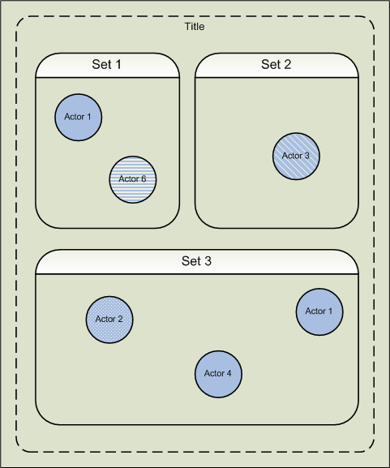

This document presents an introduction to Magic Lantern. Magic Lantern is an authoring system for interactive multimedia titles that can be used by an entire development team, including programmers, artists, and designers.
Before starting, you should already know how to use the Eclipse desktop environment. You also need to install the Magic Lantern environment on your workstation.
Before using Magic Lantern, it is important to understand some basic concepts. You need to understand how Magic Lantern is structured and how its terminology maps to your application. You also need to understand the various Magic Lantern editors and the functions within these editors.
An actor is the basic unit of autonomous action within a title. Actors implement the simulation and behavioral aspects of a title independent of presentation.
All of the game elements within your title are actors. This includes 2D characters, 3D characters, inanimate objects, animate objects, and so on. For example, in a driving game, the car, the road, and a tree alongside the road might each be a separate actor. In addition, sounds can be actors. Thus, the sound of the car accelerating and the background music could be different actors.
Actor code is intended to be independent of the target platform and is thus the most portable part of a Magic Lantern title. Actors are usually paired with roles (see "Roles") to handle presentation.
Any actor may have a set of properties associated with it. Actor authors use properties to expose internal actor state to editing tools. That is, properties enable users to examine and change the values of actor member variables while inside the Magic Lantern Scene Editor. By exposing internal actor state, you can then edit that state in the Magic Lantern tools without having to modify actor code.
An actor can have, as properties, one or more media references. A media reference is a pointer to media data, which can reside in a graphics image or a sound file. The media reference for an actor has the effect of making the media available to the actor containing the media reference property, whatever its source on disk.
The Magic Lantern Studio will supply a collection of actors to facilitate different genre of titles. Magic Lantern-supplied actor types will eventually include
Roles are paired with actors to handle the actors' target-dependent presentation. The role is responsible for displaying the actor. Displaying can mean rendering the actor image to the screen or playing the actor audio. An actor may have zero or one role.
A set organizes a related collection of roles for presentation. Each title consists of one or more sets (one or more of which are active at any given time). For example, you might have one set for three-dimensional graphics, another set for two dimensional graphics, and yet a third set for presenting sound actors.
The diagram in Figure 1-1 illustrates the components of a title as it might appear on a game machine.

Sets provide services for their attached actor/role pairs. For instance, sets used for graphics include a default camera. This camera establishes many of the display attributes of the set and can be manipulated by the actors and roles within the set.
You typically edit actors within the context of a set. That is, you add, change, and move your actors within a set.
Sets can also have properties. Use properties with sets in the same way that you use properties with actors. See "Defining Properties for Actors" for more information on properties.
A stage is an object that provides certain title-wide, platform-specific services to a title. The stage owns all major shared resources, such as the frame buffer. Stage management includes the display of rendered images to the screen and the production of sound. A stage organizes all of the sets associated with a title and can determine, for example, the order in which they are drawn to the screen. Stages also provide an application program interface (API) for platform-dependent input handling.
A title is made up of scenes. Only one scene can appear on the monitor at a time. Think of a scene as a level within a title. Often, you structure a title into levels for performance reasons, your player exercises the title at a particular level for a period of time, then advances to the next level. Each level partitions everything used within that level into groups (or cast). When your player advances to another level (to another scene) then a whole new collection of components may be loaded into memory. Scenes give you the means to structure your title into performance levels.
A group is a set of actors that are loaded into memory at the same time. As the title progresses and the need for new actors arises, new groups can be loaded into memory. A group may contain a single actor or it may contain a set of related actors.
The Digital Workprint, abbreviated as DWP, specifies all the resources that accompany a title and is a repository for saved information about the development of a title. A title can be organized into one or more workprint files.
You can create a DWP by either using the Magic Lantern Authoring Tools or writing a program using the DWP API. Refer to "Using the Magic Lantern Digital Workprint" for more information on the DWP API.
The DWP file consists of a series of statements that define all the components of your title. Each statement states the type of the DWP item and includes any options appropriate to that item.
For example, you might have a DWP statement that creates an actor item of type StaticCamera, and names the instance of this actor item a1. In addition, it might also specify positional properties for this actor instance.
At a minimum, you must have a scene, a set, a group, and an actor, with properties and role bindings, defined in the DWP for the DWP to load correctly.
Code defining an actor type appears in the DWP and is also contained in the corresponding .wpa file for the actor type. The .wpa file contains only actor type definitions.
There are two files that define actors in the DWP. One file has a .wpd extension. This file defines the actor type information. It contains a reference to the header file that defines your actor class.
The other file has a .wpa extension. This file contains specific initialization data for an instance of an actor type. It includes a statement that creates the run-time actor. Give each instance of the actor class a unique name. Use this name to retrieve a pointer to the actor via the DWP API functions. Refer to "Using the Magic Lantern Digital Workprint" for more information on the DWP API.
You can also define properties for actors. A property is another type of DWP item. Properties can be such variables as position, color, and so on. Use properties to create variables in the actor. These variables can then be loaded and saved in the DWP. Properties are also accessible in the tools.
An actor references external media through its properties of type MediaRef. In general, a MediaRef serves as a pointer to a disk representation of media, such as a graphics image or a sound file. Refer to "Understanding Media References" for a complete discussion of MediaRef properties.
You must associate actors with their roles. You use RoleBinding in the DWP to do this. Binding the actor to its role makes the role pointer available via the getrole function in the actor and the actor pointer available via the getActor function in the role.
Use the RoleAttachment DWP item to attach roles to other roles. If a role does not have a RoleAttachment statement, then it is directly attached to its set.
A title consists of a hierarchy of components. You do your work on these various components when you develop your title. Figure 1-2 shows you a sample hierarchy of title components.
Figure 1-2: Hierarchy of Title Components
Magic Lantern provides a Rehearsal Player and multiple Runtime Players. You use the Rehearsal Player to run and debug your title on the Windows development workstation. You can activate the Rehearsal Player from the Scene Editor, by clicking the Play button. Or, you can activate the Rehearsal Player from outside the Scene Editor by using the command mlplay. A Runtime Player, by contrast, includes a target engine, which is the title execution engine that runs on the target platform. Because these players serve different purposes, they require some coding differences.
The Rehearsal Player executes a Magic Lantern title using dynamic data structures and allows for midstream property changes from the outside, such as from an actor editor. It consists of a rehearsal engine, which is the execution engine of the Magic Lantern authoring system, and a user interface, which are the authoring tools.
The Rehearsal Player has a protocol that the authoring tools can use to start, stop, pause, and change properties. Internally, the Rehearsal Player maintains title state structured as a memory-resident DWP.
The Runtime Player plays the title using static data structures and has no extensions for allowing an outside agent to modify or control anything going on inside it. A runtime debug player is a platform-specific player that supports debugging and performance tuning. You can expect to write portions of your title code to specifically use the capabilities of particular target platforms.
There are certain constructs that must appear in the title code so that it can run in the Rehearsal Player environment. These code elements allow the authoring tools to interact with the title and let you use the debugging environment. In addition, this code must only be written for the Rehearsal Player. Blocks of code appropriate only for the Rehearsal Player are delineated by
#ifdef MLE_REHEARSAL
#endif
Note: The Rehearsal Player constructs are only available for titles written in C++. Titles written in Java should use the actual target Runtime Players in conjuction with any emulators or simulators provided by a native authoring environment (i.e. Android, etc.).